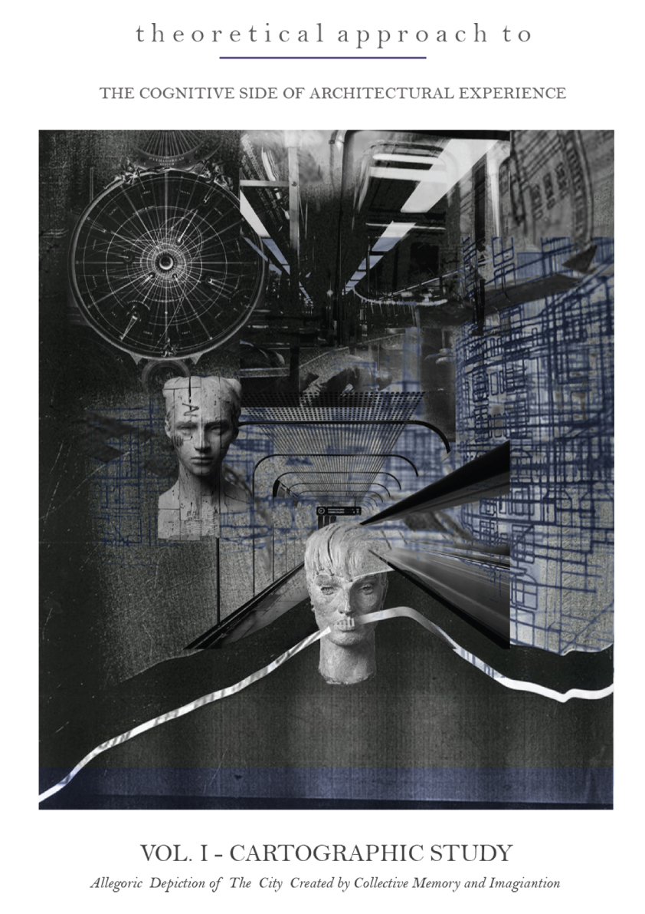
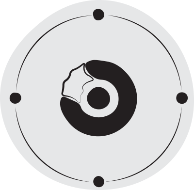
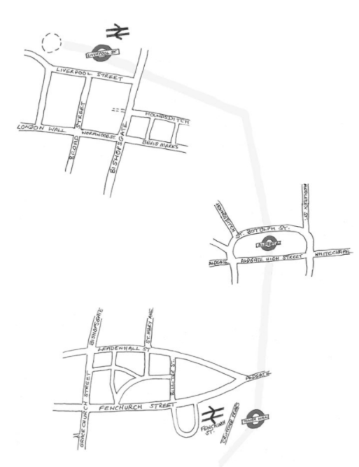
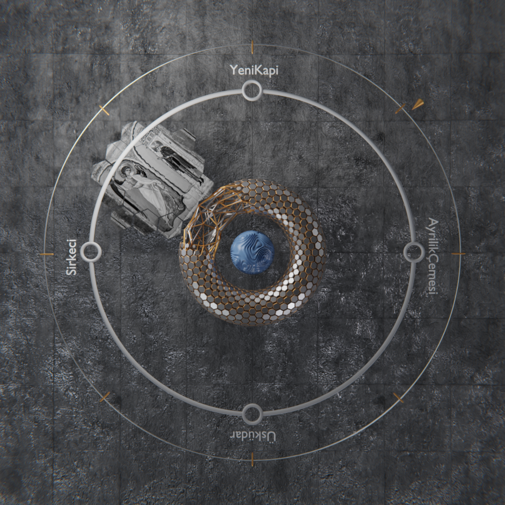
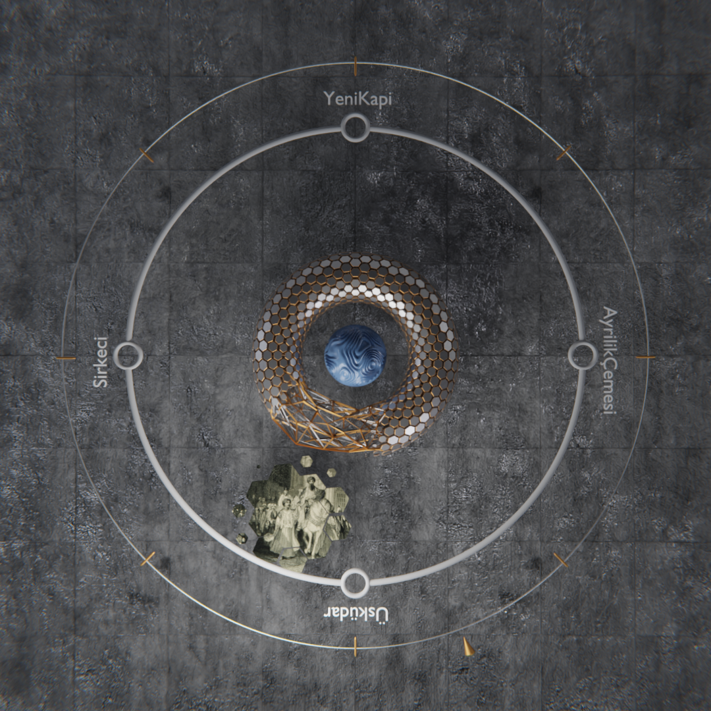
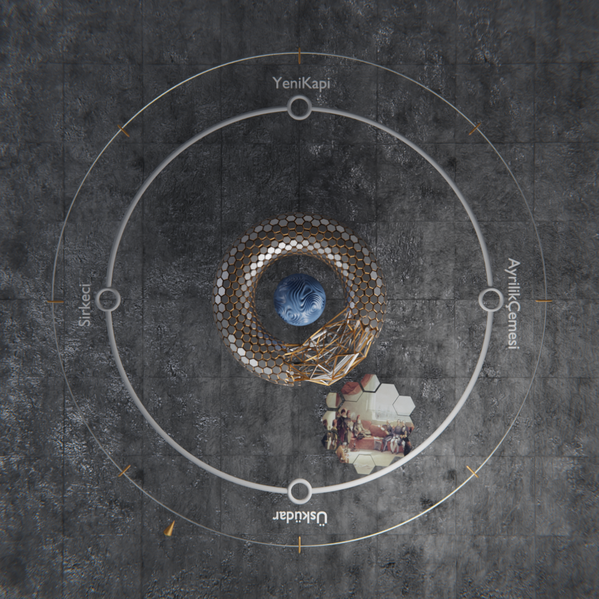
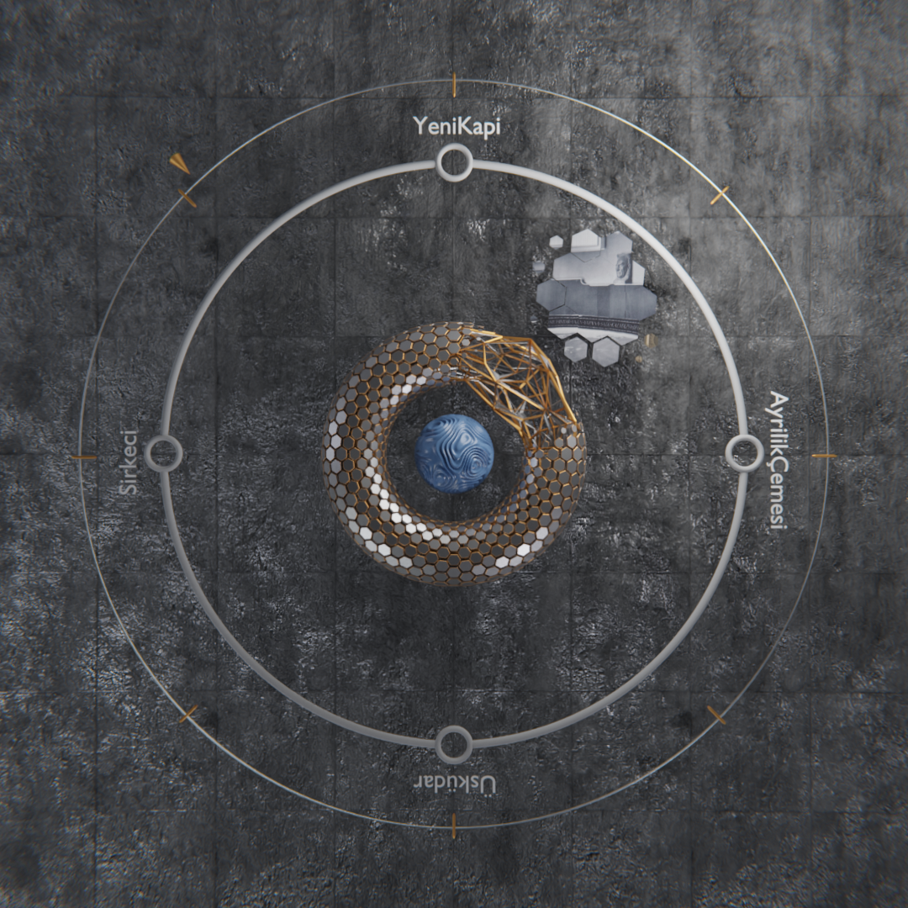
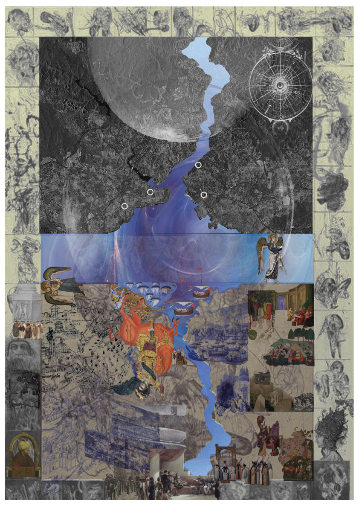

When the dematerialization becomes higher and higher, architecture surpasses its liminal presence, and the cognitive side of architectural experience accessed by running the mind is to be explored. The question of how we perceive time that is accepted as a ‘constructed space’ consisting of past, present, and future in its compressed existing comes into consideration, while it is aimed to reach a theoretical schema suggesting an ideal model for the city constituting a metaphysical realm in itself. In this regard, there must be no harm in saying that to establish a comprehensive synthesis, the cartographic study demands an analytic production of the distinctive characteristics of the city not only in terms of space but also of time. Therefore, to reach beyond in terms of the spatial entity of the city consisting of consciousness and collective memory upon itself, it is undeniable that coming up with an empirical mapping seems one of the essential parts of the study. It may quite appropriate to call this study ‘polychronous cartography’ in which the primary elements of the city and the concepts of locus, architecture, language, and history all together are to be investigated for developing a complex spatial understanding. Given metaphorical meanings to the elements, which are going to be shown on the map, a series of fictive and allegorical depictions of the city will be created by thought and imagination.
Keywords: Cognitive side of architectural experience, time, cartographic study, collective memory, empirical mapping, imagination

Time Collapses
As the perception of time and space is likely to become blurred in the subway, the mind may create a spatial depiction of the city between collective memory and imagination. By having the knowledge of primary elements of the city such as historical buildings, monuments, and plans, a further investigation between locus and architecture can be achieved, which tends to expose the world constituted by the city in itself
On the book by Mark Gillings, Piraye Hacıgüzeller and Gary lock “RE-MAPPING ARCHAEOLOGY CRITICAL PERSPECTIVES, ALTERNATIVE MAPPINGS”(page 191) on experimental mappings, movement maps. There is an experimental map made by author. This map is about mapping around subway stations. The reason is when we are in the subway we have no idea where are we, or what time it is? We have no knowladge on our space therefore author decided to map around stations and leaving blank between stations because we are not there. With that since we have no idea where are we when we are in the subway, that’s the only place we can make memory map. Let’s say you arrived Uskudar station, you will have no idea what’s up there, but you have your memory what it is like there. Therefore we made an animation about memory mapping, in each station we have a memory, this is the perfect way to show our cognitive mind.
Animation of the Memory Mapping




We simulated an animation in order to showcase the cognitive mind of Istanbul. The animation tried to summarize the cognitive mind of Istanbul through metro stations and what those stations represent by their name.
Animation of the Memory Mapping
